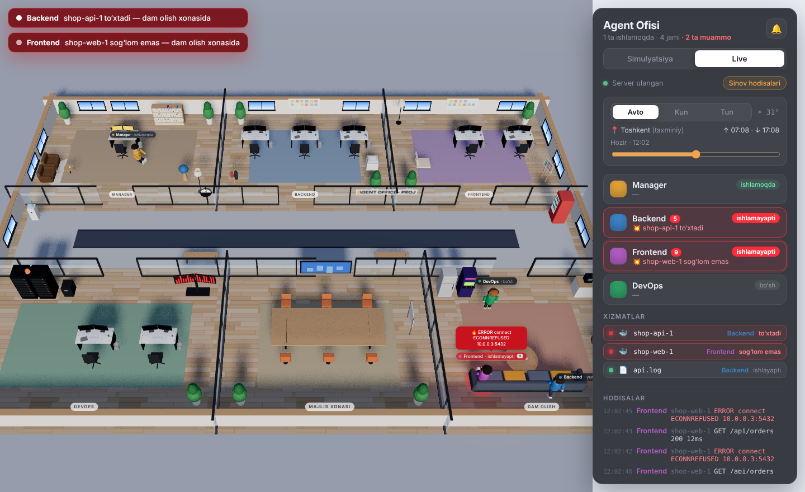
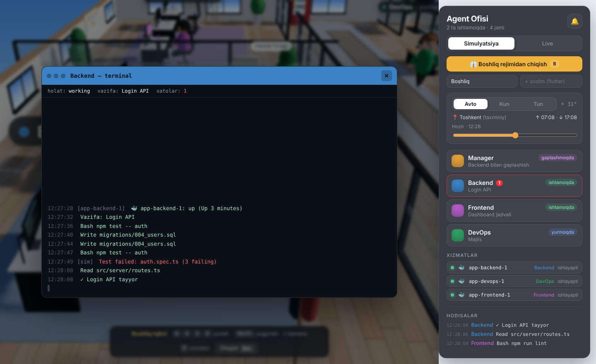
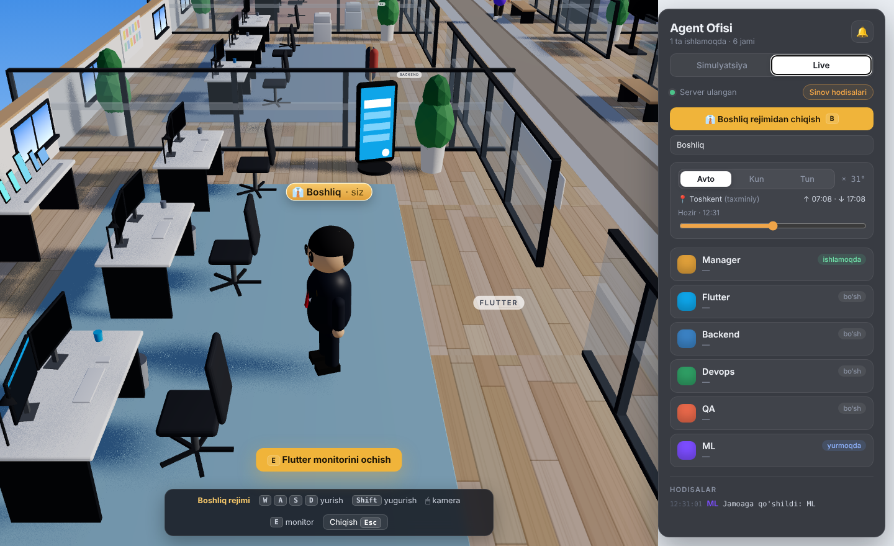
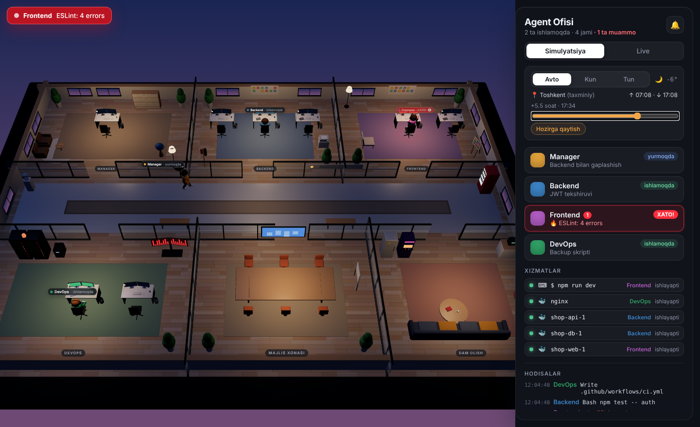
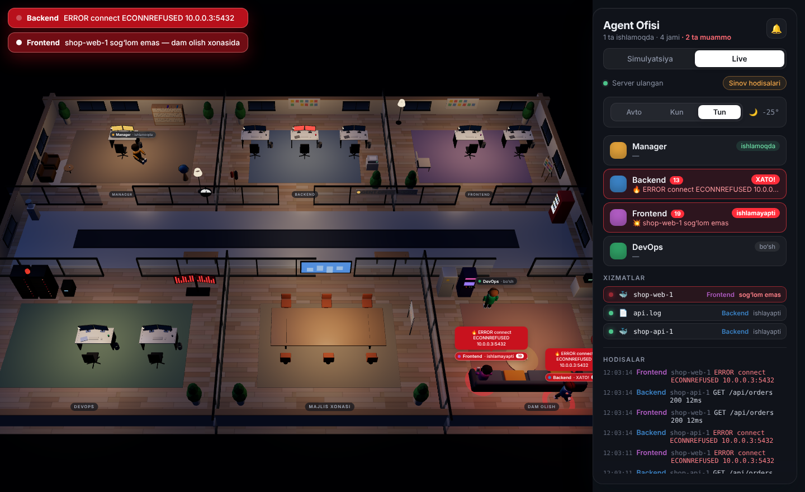

One office, three things it watchesBitta ofis, uchta kuzatuv manbai
A small local server collects events and streams them to the office in your browser. Nothing leaves your machine except the optional sunrise lookup. Kichik lokal server hodisalarni yig‘ib, brauzerdagi ofisga uzatadi. Ixtiyoriy quyosh vaqti so‘rovidan boshqa hech narsa kompyuteringizdan chiqmaydi.
Claude CodeClaude Code
Hooks report every prompt, tool call and sub-agent. When Claude delegates, the agent walks to its desk; each Edit or Bash shows as a speech bubble.Hook’lar har bir so‘rov, tool chaqiruvi va sub-agentni xabar qiladi. Claude vazifa topshirsa, agent stoliga boradi; har bir Edit yoki Bash pufakchada ko‘rinadi.
Docker
Running containers are tracked and their logs followed. Each container belongs to the agent whose name or role matches it.Ishlayotgan konteynerlar kuzatiladi, loglari o‘qib boriladi. Har bir konteyner nomi yoki roli mos agentga tegishli bo‘ladi.
Terminals and log filesTerminal va log fayllar
Run npm run dev or flutter run through the wrapper, or point the office at a log file. Output stays in your terminal as usual.npm run dev yoki flutter run ni o‘ram orqali ishga tushiring yoki log faylni ko‘rsating. Chiqish terminalda odatdagidek qoladi.
When something breaks, you can’t miss itNimadir buzilsa, buni o‘tkazib yubormaysiz
Two kinds of trouble, two reactions.Ikki xil muammo — ikki xil reaksiya.
An error → panicXato → vahima
A failed tool call, a stack trace in a container log or a red line in your terminal. The agent jumps, its status turns red, the rack siren spins and a banner names the error.Yiqilgan tool chaqiruvi, konteyner logidagi stack trace yoki terminaldagi xato qatori. Agent sakraydi, holati qizaradi, rack sirenasi aylanadi, banner xatoni ko‘rsatadi.
A service stops → loungeXizmat to‘xtadi → dam olish
A container exits, crash-loops or turns unhealthy. Its agent leaves the desk and sits on the lounge sofa until the service is back, then returns to work.Konteyner to‘xtadi, qayta-qayta yiqilmoqda yoki unhealthy. Agent stoldan turib divanga borib o‘tiradi, xizmat qaytgach ishiga qaytadi.


Walk in as the bossBoshliq bo‘lib kiring
Press B and you appear at the entrance. The camera follows you from behind. Walk into any room; agents turn and greet you, and the ones in trouble tell you what broke. Stand at a desk and press E to read that agent’s terminal. The DevOps monitor wall shows every service, the meeting-room screen shows the whole feed.B ni bosing — kirish eshigi oldida paydo bo‘lasiz. Kamera orqangizdan ergashadi. Istalgan xonaga kiring: agentlar o‘girilib salomlashadi, muammosi borlari nima buzilganini aytadi. Stol yonida E ni bossangiz, o‘sha agentning terminali ochiladi. DevOps monitoring devori barcha xizmatlarni, majlis ekrani esa umumiy lentani ko‘rsatadi.
- WASD walkyurish
- Shift runyugurish
- E open monitormonitorni ochish
- Esc back to overviewumumiy ko‘rinishga qaytish
Your project decides the roomsXonalarni loyihangiz belgilaydi
Run the setup commandSozlash buyrug‘ini ishga tushiring
/agent-office:setup— Claude scans the repository:pubspec.yaml,package.json,go.mod, Dockerfiles, compose services, CI and test folders.Claude repozitoriyani skanerlaydi:pubspec.yaml,package.json,go.mod, Dockerfile, compose servislari, CI va test papkalari.It writes your teamJamoani yozib beradi
One agent file per area in
.claude/agents/, with the real folders, stack and test commands, plus.agent-office.jsonmapping containers and log files to agents.Har bir yo‘nalish uchun.claude/agents/ichida agent fayli — haqiqiy papkalar, stek va test buyruqlari bilan, hamda konteyner va loglarni agentlarga bog‘lovchi.agent-office.json.The building growsBino kengayadi
Each new role gets its own room, furnished for the job: a device lab for Flutter, a server rack for DevOps, a bug board for QA. The new hire walks in through the front door.Har bir yangi rol o‘z ishiga mos jihozlangan xona oladi: Flutter’ga qurilmalar stoli, DevOps’ga server rack, QA’ga xatolar doskasi. Yangi xodim asosiy eshikdan kirib keladi.

The sky outside is your skyDerazadagi osmon — sizning osmoningiz
The office finds your location (browser GPS, or your IP address if you decline), fetches today’s sunrise and sunset from sunrise-sunset.org and works out the sun’s height every 30 seconds. Sunlight angle, sky colour, window panes and lamps follow it. Switch to Day or Night to fix the look, or drag the time slider to preview the evening.Ofis joylashuvingizni aniqlaydi (brauzer GPS’i, rad etsangiz — IP manzil), sunrise-sunset.org dan bugungi quyosh chiqishi va botishini oladi va quyosh balandligini har 30 soniyada hisoblaydi. Nur burchagi, osmon rangi, derazalar va chiroqlar shunga qarab o‘zgaradi. Kun yoki Tun tugmasi bilan qotirib qo‘yish yoki slayder bilan kechqurunni oldindan ko‘rish mumkin.


ReferenceMa’lumotnoma
CommandsBuyruqlar
| CommandBuyruq | What it doesNima qiladi |
|---|---|
/agent-office:office | Starts the server if needed and opens the office in your browserKerak bo‘lsa serverni yoqib, ofisni brauzerda ochadi |
/agent-office:doctor | Explains why the office doesn’t open: server, port, addressOfis nega ochilmayotganini aniqlaydi: server, port, manzil |
/agent-office:setup | Reads the project and creates the team and its roomsLoyihani o‘qib, jamoa va xonalarni yaratadi |
/agent-office:office-watch | Runs a command and streams its output to an agentBuyruqni ishga tushirib, chiqishini agentga ulaydi |
/agent-office:office-stop | Stops the serverServerni to‘xtatadi |
EnvironmentMuhit o‘zgaruvchilari
AGENT_OFFICE_PORT | First port to try (4777); if it is busy the next free one is usedBirinchi sinaladigan port (4777); band bo‘lsa keyingi bo‘sh port olinadi |
AGENT_OFFICE_AUTOSTART=0 | Don’t start the server when a session startsSessiya boshlanganda serverni yoqmaslik |
AGENT_OFFICE_DEBUG=1 | Print every event the server receivesServer olgan har bir hodisani chiqarish |
.agent-office.json
Optional, in your project root. /agent-office:setup writes it for you.Ixtiyoriy, loyiha ildizida. /agent-office:setup uni o‘zi yozadi.
{
"team": [
{ "id": "flutter", "name": "Flutter" },
{ "id": "backend" },
{ "id": "devops" }
],
"containers": {
"api": "backend", // compose service or container name
"redis": "devops"
},
"logs": [{ "path": "logs/api.log", "agent": "backend" }],
"allContainers": false
}
Watch a terminal commandTerminal buyrug‘ini kuzatish
node <plugin>/office/run.mjs --agent flutter -- flutter run
QuestionsSavollar
Does it slow Claude down?Claude’ni sekinlashtiradimi?
No. The hook script sends one small request with a half-second timeout and always exits successfully, even when the office is closed.Yo‘q. Hook skripti yarim soniya cheklovli bitta kichik so‘rov yuboradi va ofis yopiq bo‘lsa ham doim muvaffaqiyatli tugaydi.
What if I don’t use Docker?Docker ishlatmasam-chi?
Everything else still works. The panel shows Docker as not available and the office keeps following Claude, your terminals and log files.Qolgan hammasi ishlayveradi. Panelda Docker mavjud emasligi ko‘rinadi, ofis esa Claude, terminallar va log fayllarni kuzatishda davom etadi.
Can I add a role by hand?Rolni qo‘lda qo‘sha olamanmi?
Yes. Add it to team in .agent-office.json or create .claude/agents/<id>.md. The office notices within two seconds and builds the room. Any sub-agent type Claude launches that the office hasn’t seen also gets a room.Ha. Uni .agent-office.json dagi team ga qo‘shing yoki .claude/agents/<id>.md yarating. Ofis ikki soniya ichida sezadi va xona quradi. Claude ishga tushirgan, ofis hali ko‘rmagan har qanday sub-agent ham xona oladi.
Why is my location needed?Joylashuv nima uchun kerak?
Only to light the office like the real sky outside. Decline the browser prompt and it falls back to your IP’s city; pick Day or Night and no location is used at all.Faqat ofisni tashqaridagi haqiqiy osmonga mos yoritish uchun. Brauzer so‘roviga rad javobi bersangiz, IP bo‘yicha shahar olinadi; Kun yoki Tun tanlansa, joylashuv umuman ishlatilmaydi.